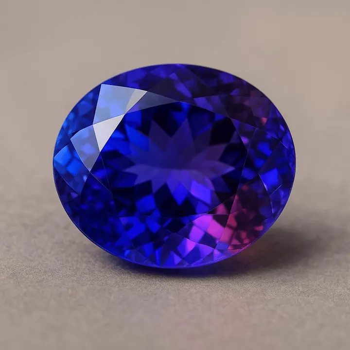

坦桑石：地球上只有一座山的寶石
全世界只有一座山產坦桑石——它太稀有，連寶石學家都警告：「這顆石頭，用完就沒了。」

核心定義
坦桑石（tanzanite）是黝簾石（zoisite）的藍紫色變種，1967 年在坦尚尼亞阿魯沙附近的梅雷拉尼山（Merelani Hills）首度發現——那是全球唯一的礦區，目前開採範圍僅約數平方公里。
它的招牌是「藍紫雙色」：不同角度與光線下，它會在濃藍與紫羅蘭之間變化——這種現象叫「多向色性」（pleochroism），讓坦桑石在照片裡永遠拍不出它的真實美麗。
特徵與分類
| 項目 | 坦桑石 | 藍寶石 | 藍色鋯石 |
|---|---|---|---|
| 硬度 | 6.5–7 | 9 | 6–7.5 |
| 折射率 | 1.69–1.70 | 1.76–1.77 | 1.92–1.98 |
| 多向色性 | 藍紫強烈 | 藍/綠藍 | 弱 |
| 產地 | 僅坦尚尼亞 | 全球多國 | 多國 |
| 價格級別 | 中高 | 高 | 中 |
坦桑石多數經過低溫加熱——把褐色原石加熱至約 600°C，顏色轉為藍紫。這是業界公認的標準優化，與天然藍紫幾乎無法區分。
科學原理
坦桑石的藍紫色來自釩（vanadium）與鉻（chromium）離子取代鋁的位置：加熱後，釩離子的價態改變，讓原本褐色調轉為藍紫。它的多向色性極強——同一顆石頭從不同晶軸方向看，可能是藍、紫、紅褐三種顏色。
稀有性方面，地質學家估計坦桑石礦藏可能在數十年內耗盡——因為礦區極小、且深層開採難度增加。這讓「最後一座礦」成為它最有力的行銷故事，也是真實的稀缺風險。
鑑定與鑑別方法
- 看多向色性：轉動觀察，藍↔紫變化強烈
- 測折射率：1.69–1.70（藍寶石 1.76+）
- 掂重量：比重 3.35（藍寶石 4.0，明顯更輕）
- 放大鏡：坦桑石常見「雙折射」陰影線
- 證書：確認產地（全球唯一）與處理說明
市場行情與保養建議
行情：坦桑石 2026 年零售參考，1–2 克拉每克拉約新台幣數千至兩萬元，5 克拉以上頂級濃藍紫可達每克拉 5–10 萬元——大克拉稀有，價格跳升。
提醒：市面上「藍色坦桑石」多為加熱處理——天然藍紫（未加熱）極少，價格更高；另有「藍色黝簾石」混淆名詞。價格僅供參考，非投資建議。
常見誤區
它確實常被拿來比藍寶石——但硬度只有 6.5–7，日常佩戴易刮傷。它該被當成「獨一無二的坦桑石」，而不是藍寶石的廉價版。
加熱是坦桑石產業的標準優化，九成以上的市售坦桑石都加熱過——「天然藍紫」反而稀有到需要特別標註。
冷知識
1967 年發現後，蒂芙尼（Tiffany & Co.）為它取名「tanzanite」——結合國名 Tanzania 與藍色的字尾，一舉把它推上國際舞台。
傳說草原火災後，馬賽族牧人發現了被燒成藍紫色的石頭——雖然故事無法考證，但它讓坦桑石的發現多了一層傳奇。
反直覺觀點
「數十年內耗盡」是行銷也是地質事實——但每當價格上漲，開採技術就會升級，儲量估算也一再上修。稀缺是真的，但時間表別全信。
因為產地唯一、大克拉又罕見，頂級 10 克拉坦桑石的視覺震撼力，可以媲美同價位藍寶石——它是「花同樣的錢，買更大的震撼」的理性選擇。